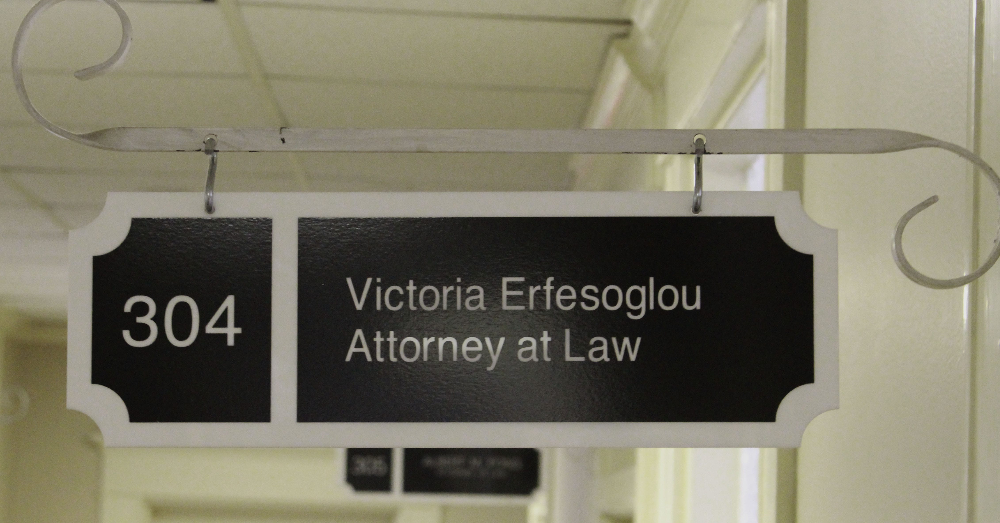

Criminal Law
Victoria is eager to start working to solve your problem, and fighting for you. She has experience creating grand jury packets, pretrial diversion applications, applications and writ of habeas corpus petitions for bond reductions. If you are charged with a misdemeanor or felony offense, you must seek representation immediately.
Whether you are charged with a misdemeanor, or a felony, you should take your charges very seriously. Victoria understands that even a misdemeanor charge can have serious consequences. Criminal charges, even misdemeanors, can have immigration consequences, can affect your employment opportunities, and carry financial obligations (even deferred adjudications can have theses effects). Irrespective of whether you decide to take a plea offer from the government, Victoria will start preparing for trial on your case. She works with investigators and interpreters as needed, talks to witnesses and will help you prepare for trial. Whether you testify or not, Victoria will prepare you for trial and anticipated cross examination. Many lawyers may try to contact you if you are arrested for any of the below kinds of cases, and make you promises they aren't allowed to make. Victoria will discuss payment options with you, and discuss your case ethically and truthfully. If a plea bargain is right for you, Victoria will keep the lines of communications open with the government.
Communication and client participation is vastly important to Victoria. Please contact her today, to start working on a solution for you.
- DWI
- Drugs
- Juvenile
- Misdemeanors
- Prostitution
- Felonies
- Petitions for Non-Disclosure
- Grand Jury Packets